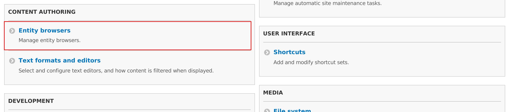

Sam Morenson is thinking about media in Drupal core
My friend and a long time member of the Drupal media team has published a blog post where he thinks about media in Drupal core and possible ways forward.
I am very happy to see mature debate evolving in this area. We need more of that!
Presentations about various Drupal 8 media modules
In the past few months I gave many talks about the modules that we created as part od Drupal 8 media initiative.
Drupal 8 Media module at Google Summer of Code 2016
In this video Vijay Nandwani, our GSoC student, explains his progress on the Drupal 8 Media module.
He also wrote a blog post where he explains more technical details.
Media entity reaches 8.x-1.0!
More than two years ago I gave a session about the future of media at DrupalCon Prague. The outcome of that session was a planning sprint that happened two days after it. One of the ideas that was born on that sprint was Media entity, storage layer for media-related information built with simplicity and support for remotely hosted media in mind.
Image effects module for Drupal 8
Image effects is a new module for Drupal 8 as it didn't exist in previous versions. It's purpose is to bring most of contributed image effects under one roof. This makes a lot of sense since it prevents fragmentation and makes effects easier to find.
Entity browser got configuration UI
Today I committed a configuration UI patch to the Entity browser module. This significantly improves experience for site builders. It is now possible to create, update and delete entity browsers without hacking yaml configuration files.
Configuration is available under Content authoring configuration: 
Time to submit Summer of code proposals!
Google Summer of Code is a global program focused on bringing more student developers into open source software development. Students work with an open source organization on a 3 month programming project during their break from school.
A lot of exciting Drupal 8 media news!
Media made a big leap towards a first major milestone. It's time to test what we have and help stabilise it.
After media sprint in Zurich, which happened in December, we didn't sleep. Together with the team at MD Systems we actively worked on parts of media ecosystem. Would you like to know what we achieved?
Zurich Drupal 8 media sprint was a success!
Almost exactly two months ago MD Systems announced the Media initiative program that they initiated in cooperation with Ringier, Gassmann media and Südostschweiz. Initiative was kicked off with a week long sprint, which happened at first week of December in Zurich.

Photo by Stefanie Gupta
When will media be ready for Drupal 8?
With Drupal 8 around the corner a lot of people started asking me when will media be ready. It was quite reasonable to expect this to start happening. Unfortunately there is no simple answer to this question. Shortest would be: "It depends.... What exactly do you need?". I know what you're thinking now... "Are you joking with me!?"

Core media team at NYC Camp 2014.